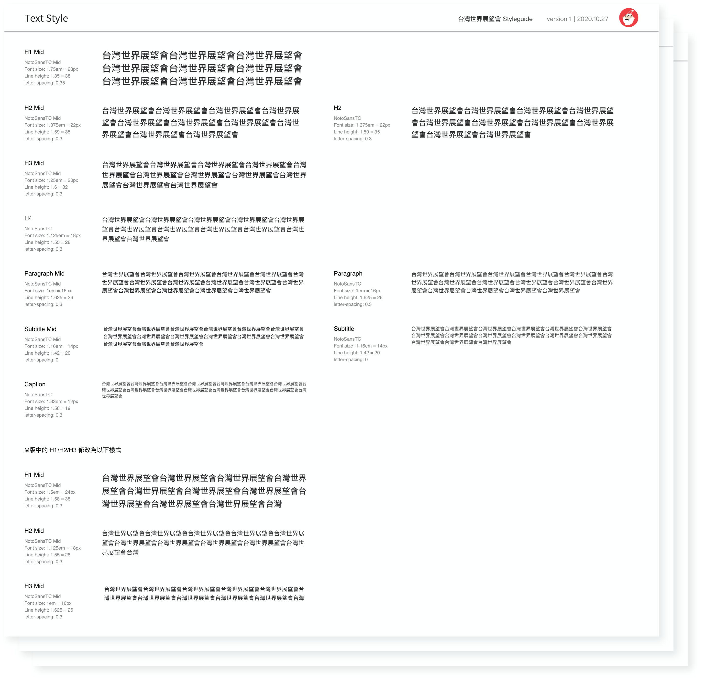

World Vision Taiwan Website
Project type:
RWD Website
Duration:
2020-2021, Scrum framework
Role:
UI/UX Designer
Methods:
UX interview / Cognitive Walkthrough / User Story / User Flow / Lo-fi Prototyping / Card Sorting
World Vision International(WVI) is an international and humanitarian aid organization. It published
a new website version and was expected to online user donation intention and behavior increase.
However, our client Taiwan branch team(WVT) observed UX differences between Asian and Western. They
assess the new version will let user donation intention decrease. Moreover, our team noticed the
original Content Management System is inefficient for employees to analyze data, resulting in low
productivity. Moreover, the mobile user population increase nowadays, but the website is not
responsive design, leading users cannot share it with a single link and requires more engineering
time to maintain multiple pages for the same content. Therefore, we supported the WVT team to
optimize the user experience of the World Vision Taiwan site individually.
Budget restricted
Our client avoid to spend money for conducting research because of budget
restricted. Therefore, in order to understand what user data they had collected, what project goals
were, what does success mean to the project, I conducted the UX interview with the 3 WVT members.
Then, I spend 2 days to conduct cognitive walkthrough research after collecting user information in
a UX interview. By doing so, we were able to convert insights into problem statements and solutions,
leading to 40% in saving from the established project budget.
Time limited
The client want to launch the new version of the site in 6 months. However, our
team members have to navigate multiple tasks in different projects simultaneously. Therefore, I lead
the engineering team in the agile framework. I wrote accepted criteria for each sprint and ask team
members to report daily tasks every morning. Sometimes I adjust tasks and report to the Taiwan
branch team if the project is delayed. Thus, we were able to deliver PC and mobile websites from
design concepts to delivery used on iOS, Windows, Android systems on time.
RWD
Design concepts to delivery used on multiple systems
40%
Saving from budget
30%
Faster product delivery
4+
Rounds of iteration
98%
Users and stakeholders satisfaction
200+
Pages were created
In order to make communication more faster and efficient, we implement an agile development process.
We have a lot of feeding back and forth between our team and the WVT team to ensure we can deliver.
This project has been designing 4+ rounds of iteration. The website will launch in 2022 summer.
Since the budget and time were limited, we did not conduct user interview with target users.
However, after we conducted a 45 mins
Client Interview
with our client WVT team to understand end users and internal users’s expectation and needs base on
their data and observation. Then, I recruited 3 team members as participants to implement
Cognitive Walkthrough Research
. I was able to evaluate website usability by observing user taking tasks in user stories.
End users
Most users are between 40-50 years old and women account for the vast majority. They might be
Members, (Potential)Project Donors, (Potential)Child Sponsors, or First-time Visitors.
Donation Intention
- Cannot locate pages in tasks
- Required overwhelming information when signing up
- Limited control in the donation process
- Offered inconvenience payment methods
Weak branding recognition
- Style guide was inconsistent with the World Vision International website
Mobile unfriendly
- Website was not a responsive design and users visit inappropriate version with the device
Internal users
Internal users include content editors, data analysts, project managers...etc.
High budget on human resources
- Overwhelming offline jobs due to lacking Data export/import module on CRM system
- Existing content editor module did not offer an image editor, product listing automatically, and merge with the WVI database
In order to arrange a project timeline, we defined the user statements and created new user stories.
We were able to set up acceptance criteria in each story and managed competing priorities.

Based on insights in user research, we had to redesign the
Information Architecture to solve those problems. Then, we created the prototype to communicate with
the WVT team. A lo-fi prototype made our communication more effective. We were able to reach a
consensus for functions, elements, information on pages.
# Cannot locate pages in tasks
Redesigned information architecture
In the original version, the child-sponsorship history section is located
independently on an another website. It makes members confused and inconvenient to locate and
review. Furthermore, we observed that participants cannot locate a project page when asked to donate
either international or domestic project. Those signals gave us insights into the problems from the
information architecture.
To redesign information architecture, a
Card Sorting Method
was conducted. We were able to gather contents in member profile sections into one. To be precise,
members can browse project donation history, child-sponsorship history, and personal information in
a section. Moreover, we categorized projects into international or domestic. Thus, users can find
pages efficiently and intuitively.


# Required overwhelming information when signing up.
Introduce Social Login
According to the
research from the Meta,
implementing Facebook Login benefits increases in logins, higher levels of engagement, and continues
increasing in the number of people using Facebook Login. Moreover, users are able to log in without
fulfilling overwhelming information. Users can choose which information they share. Hence,
attracting visitors to become members start by giving users control.
# Required overwhelming information when signing up.
Save member information automatically
For the purpose of reducing users' pressure when signing up, we introduced
social login. Nevertheless, member information is still required for record and analysis. To solve
this problem, we established a feature to save member information automatically when in the donation
process. Thus, it can release users' pressure to become members.
Besides, we noticed that some users expected to donate by using others' names.
Therefore, we invented a feature called "Donor Book". Users are able to edit other donor information
as they want and automatically fill in/remove/add/revise in the donation process or member profile
pages.
# Limited control in the donation process
Adjustable donation items
Users were able to remove, add, and replace a donation project or adjust donation
frequency on the cart page.
# Overwhelming offline jobs due to lacking Data export/import module on CRM system
Introduce a Drupal 8
Drupal 8 is a content management system which is well-known for its flexibility,
scalability, and security. WVT teams were able to edit content easier than ever before,
import/outport data from external/internal sources, or protect users and insider information.
DESIGN REVIEW
